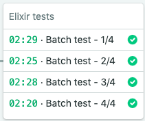

Principles of Automated Testing
Jekri Preclaro Orlina
Senior Technical and Development Lead
This slide is left intentionally blank.
Why test at all?

Take this. It's dangerous to go alone.

Okay thanks lah

The four powers of automated testing

Be as steady as stone
- We test with the desire of stability
- Sturdiness is a sign of a well tested piece of technology
- We deflect malicious attacks like flies

Flow like water
- We quickly make sense of objectivesand intentions
- We are able to adjust to agile requirements without breaking things
- We can choose to freeze and become fluid again
As free as air
- We are able to experiment possibilities safely with less risk
- We get more space to add value
- Despite tests seeming to be restraining, freedom of time is given

Bright and warm like fire
- Stable products outshine competition
- If there are two things that serve exactly the same purpose, the more stable and beautiful option is picked
- Gives tech companies the bravery to expand space and territory
Principles of Automated Testing
When we test, make sure that
- The input is predictable
- The output is predictable
- We test only what we write
- We try to cover ground as much as we can